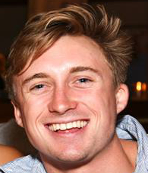

Stuart Schrader is a member of the class of 2017 at the University of North Carolina at Chapel Hill majoring in Political Sciences and communications. After taking a film class in his sophomore year where he felt barely involved and thought there was no energy, he decided
to take initiative and cofounded Unisincerity, a film making group at UNC. On a proffesional level, he is one of the cofounders of Post Moves, a production company.
Riley Reid
Riley Reid is currently a senior at UNC Chapel Hill in the class of 2017 going for B.A.'s in Advertising, Entrepeneurship, and Spanish. He is one of the cofounders of Unisincerity along with Stuart Schrader and Prakash Kadiri. In addition to that he is part of a proffesional production company that he cofounded with his partner, Stuart Schrader.
